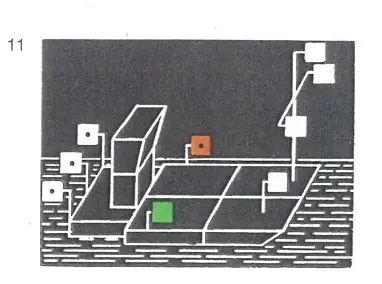
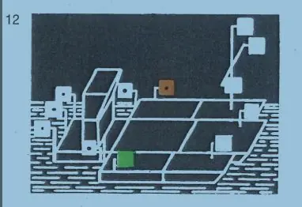
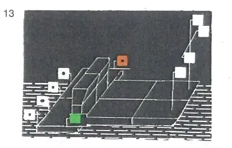
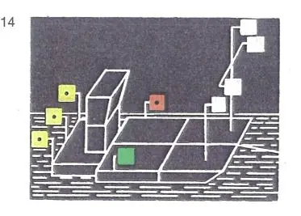
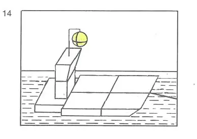

§ 3.10 Bezeichnung der Schubverbände in Fahrt(Anlage 3 Bild 11, 12, 13, 14)
Rheinschiffahrtspolizeiverordnung
1. | Schubverbände in Fahrt müssen bei Nacht führen: | |||
a) | als Topplichter | |||
I. | drei Topplichter auf dem Vorschiff des Fahrzeugs oder, bei mehreren Fahrzeugen, auf dem Vorschiff des linken der Fahrzeuge an der Spitze des Verbandes. |  | ||
Diese Topplichter müssen in der Form eines gleichseitigen Dreiecks mit waagerechter Grundlinie in einer Ebene senkrecht zur Längsebene des Verbandes angeordnet sein. | ||||
Das oberste Topplicht muß mindestens 5,00 m über der Ebene der Einsenkungsmarken gesetzt werden. Die beiden unteren Topplichter müssen in einem Abstand von etwa 1,25 m voneinander und ungefähr 1,10 m unter dem obersten Topplicht gesetzt werden; | ||||
II. | Ein Topplicht auf dem Vorschiff jedes anderen Fahrzeugs, dessen ganze Breite von vorn sichtbar ist. Dieses Topplicht ist nach Möglichkeit 3,00 m tiefer als das oberste Topplicht nach Ziffer I hiervor zu setzen. | |||
Die Masten dieser Topplichter müssen in der Längsebene des Fahrzeugs stehen, auf dem sie geführt werden; | ||||
b) | als Seitenlichter | |||
auf dem breitesten Teil des Verbandes, höchstens 1,00 m von dessen Außenseiten entfernt, möglichst nahe beim schiebenden Fahrzeug und mindestens 2,00 m über dem Wasserspiegel; | ||||
c) | als Hecklichter | |||
I. | drei Hecklichter auf dem Hinterschiff des schiebenden Fahrzeugs in einer waagerechten Linie senkrecht zur Längsebene mit einem seitlichen Abstand von etwa 1,25 m und in ausreichender Höhe, so daß sie nicht durch eines der anderen Fahrzeuge des Verbandes verdeckt werden können; |  | ||
II. | ein Hecklicht auf dem Hinterschiff eines jeden anderen Fahrzeugs, dessen ganze Breite von hinten sichtbar ist. Befinden sich in dem Verband außer dem schiebenden Fahrzeug mehr als zwei von hinten sichtbare Fahrzeuge, ist dieses Hecklicht nur von den beiden äußeren Fahrzeugen zu führen. | |||
2. | Schubverbände, die durch zwei schiebende Fahrzeuge nebeneinander fortbewegt werden, müssen bei Nacht Hecklichter nach Nummer 1 Buchstabe c Ziffer I auf dem steuerbordseitigen schiebenden Fahrzeug führen; das andere schiebende Fahrzeug muß das Hecklicht nach Nummer 1 Buchstabe c Ziffer II führen. |  | ||
3. | Nummer 1 gilt auch für Schubverbände, wenn sie bei Nacht geschleppt werden; jedoch müssen die drei Hecklichter nach Nummer 1 Buchstabe c Ziffer I gelb sein. |  | ||
4. | Wird ein Schubverband bei Tag geschleppt, muß das schiebende Fahrzeug führen: | |||
einen gelben Ball an einer geeigneten Stelle und so hoch, daß er von allen Seiten sichtbar ist. |  |